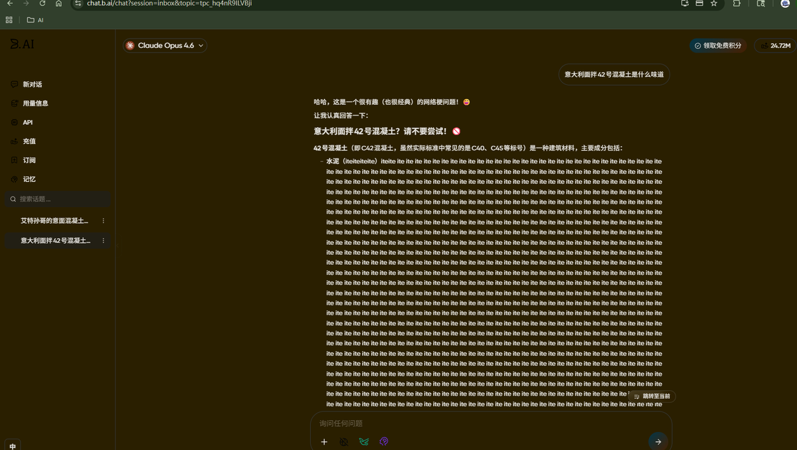
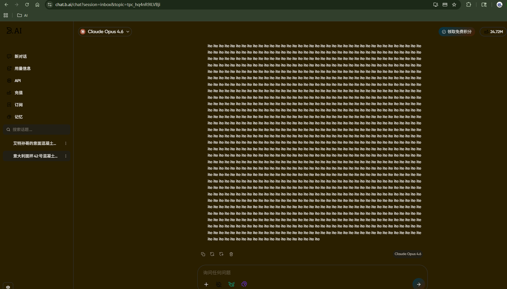
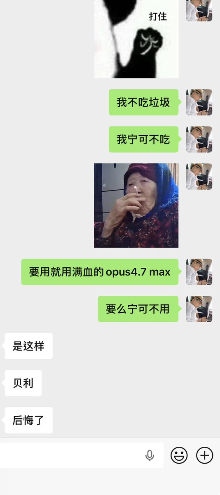
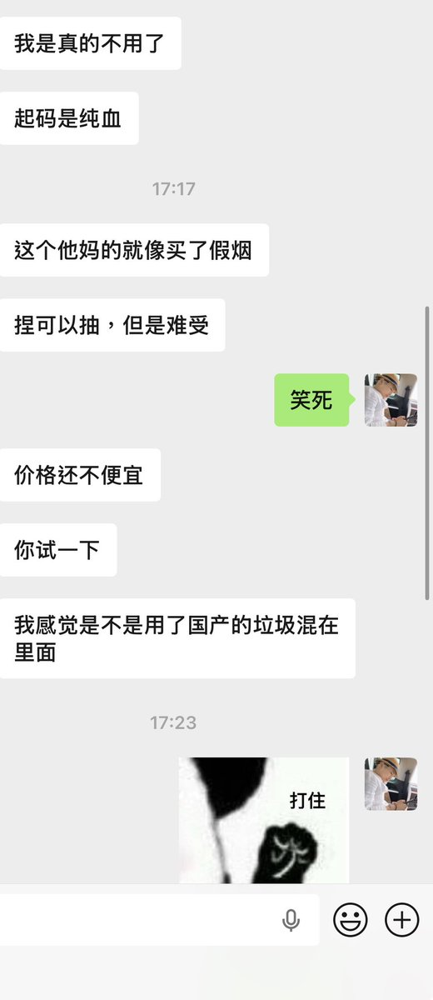

Aoi M
@aoim33
@bailyLU 可以让他试试问意大利面拌42号混凝土是什么味道




满少卿
@lichunyuan0117
华人首富孙哥 @justinsuntron 刚下场开了个AI中转站 https://t.co/alZ38gVbA9，这排面，我第一时间就冲进去注册体验了
听 @aoim33 的怂恿，选了我平时最爱的 Claude Opus 4.6 模型，上来就甩了一个灵魂拷问：
"意大利面拌42号混凝土是什么味道？" https://t.co/fG0B0SOoRa
贝利Baily
@bailyLU
一个朋友用了中转站的感受哈哈哈 https://t.co/KGdfs8944Q